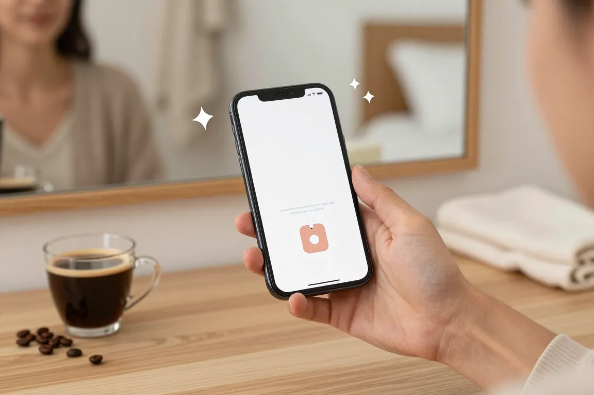

nett · 2019–now · også: GRWM, Get ready with me-video, Morgenrutine-klipp
En skaper snakker til et nært telefonkamera mens hun eller han sminker seg eller velger antrekk, med mykt lys, et speil, jump cuts og en linje med bildetekster. Formen vokste ut av sminkeveiledninger på YouTube på 2000-tallet.

Kjerneidé
Del en ekte rutine i sanntid: praten betyr mer enn resultatet.
Designprinsipper
Ramm inn ansiktet og skuldrene på 55 % til 70 % av bildehøyden, med øynene 38 % fra toppen.
Lys med en ringlampe eller et vindu på 5600 K til 6500 K.
Bruk jump cuts med 1 klipp hvert 2. til 5. sekund; fjern alle pauser.
Sett en krokelinje i de første 1,5 s, for eksempel anledningen eller stedet.
Tekst talen med ord på 40 px, høyst 2 linjer, ved 65 % av bildehøyden.
Vis produktnavn som tekstlapper på 28 px med en radius på 12 px, plassert nær produktet.
Bruk en varm, myk gradering: løft skyggene med 10 % og hold hudtonene på 2 til 3 blendertrinn eksponering.